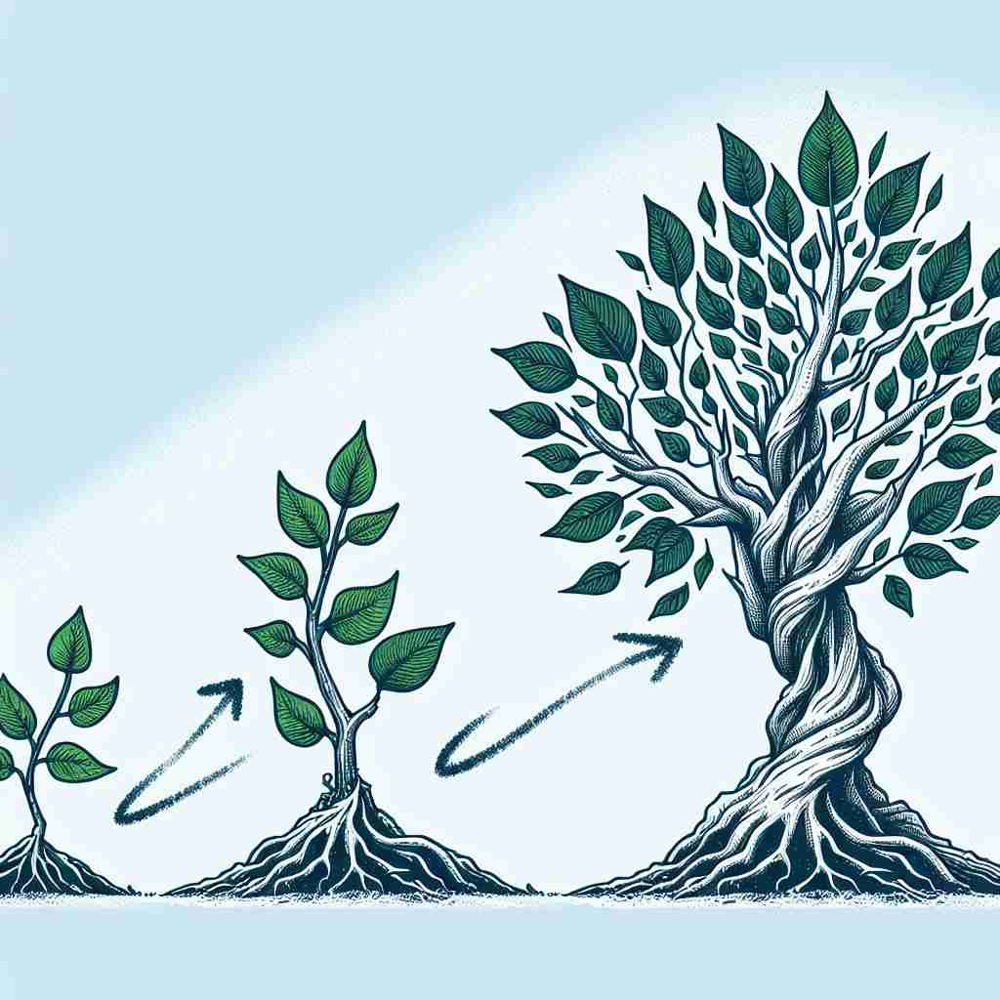

💬 The tree will develop a strong trunk as it grows.

💬 Children can develop new skills by learning every day.

💬 The seedling will develop into a tree with strong branches.
💬 A small plant will develop from a seed into a tree.
🔈 [dɪ'veləp]
🗝️ v. to gradually grow or become more advanced
🖼️ 在一个繁忙的校园里，一个学生逐渐通过努力学习和参与课外活动，越来越成熟。他从一开始的青涩到现在的自信，完美地展示了'develop'通过逐步成长和变得更先进的含义。
🔍 想象'develop'如同一棵树的生长过程。从一粒种子开始，逐渐成长、壮大，最终变成一棵枝繁叶茂的大树。这个"逐渐生长"的核心概念贯穿了'develop'的各种含义，无论是创造新事物、形成新特质，还是显影照片、开发土地，都可以联想到这个过程。记住这个核心概念，就能更容易理解和记忆'develop'的多重用法。
💬 The tree will develop a strong trunk as it grows.
💬 Children can develop new skills by learning every day.
💬 The seedling will develop into a tree with strong branches.
💬 A small plant will develop from a seed into a tree.
🌳 由前缀 "de-"（表示去除、解开）和词根 "velop"（来自法语，意为卷、包裹）组成，原意为解开包裹，后来引申为发展、开发。
💡 可以将 "develop" 想象为从卷中解开（de-unroll），即逐步展开或进步的过程，以此帮助记忆其含义。
🗝️ v. to create or produce something new
🖼️ 在一个充满创意的工作室里，一位设计师正在构思她的新作品。通过不断地尝试和创新，她最终开发出了一款令人耳目一新的产品，完美地展示了'develop'创作或生产新事物的含义。
💬 Scientists are developing a new drug to treat cancer.
❓ 从基本概念逐步"生长"出新事物
🗝️ v. to begin to have a particular quality or characteristic
🖼️ 在一个温馨的家庭中，养在室内的小狗逐渐开始展现它友好和忠诚的特点，成为家庭中不可或缺的一部分，完美地展现了'develop'开始具有特定品质或特征的含义。
💬 He developed a passion for painting in his teenage years.
❓ 某种特质或特征逐渐"生长"出来
🗝️ v. to make a photograph, film, etc. visible by chemical processes
🖼️ 在一个昏暗的暗房里，摄影师小心翼翼地将胶卷浸泡在化学溶液中，逐渐显现出一张清晰的照片，完美地说明了'develop'通过化学过程使照片或影片可见的含义。
💬 The photographer developed the film in his darkroom.
❓ 使隐藏的图像逐渐"生长"显现
🗝️ v. to make land or buildings suitable for a particular purpose
🖼️ 一片空置的农田被规划用作住宅开发，建设者们投入心血整理土地，建造舒适的住房，完美地展现了'develop'使土地或建筑物适合特定用途的含义。
💬 The area is being developed into a new shopping center.
❓ 使土地或建筑"生长"成特定用途
🗝️ v. to start to have a medical condition
🖼️ 一位长期工作的职员开始感到疲惫，逐渐显现出了一些健康问题，医生检查后告诉他，这些是压力引起的症状，这完美地展示了'develop'开始患上某种医疗状况的含义。
💬 He developed symptoms of the flu.
❓ 疾病在体内逐渐"生长"出现